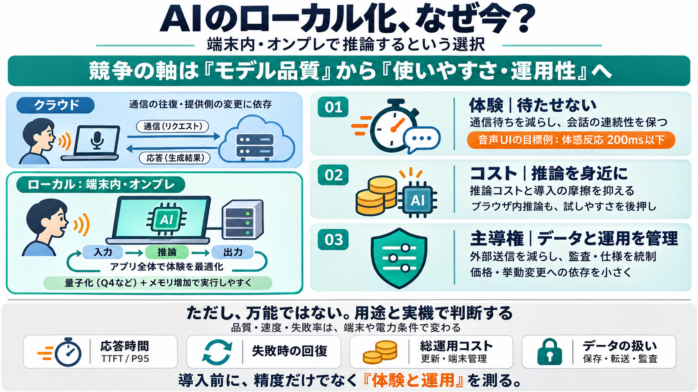

Local AI vs Cloud AI in 2026: When to Run Models on Your Own Hardware | MindStudio
But for real-time applications — live transcription, latency-sensitive UI interactions, embedded AI in devices, or agent…

But for real-time applications — live transcription, latency-sensitive UI interactions, embedded AI in devices, or agent…
OpenAI offers two paths. You can self-host the open-source Whisper models on your own infrastructure, or call the propri…
best open TTS Elo — past ElevenLabs v3 82M Kokoro: a top-six voice on a laptop CPU 6.32% best open English word erro…
When AI models are run on local data centers, data remains inside the private network, eliminating exposure through thir…
For an AI voice agent running at sub-500ms total end-to-end latency, a P95 TTFT of 180ms is acceptable. A P50 TTFT of 18…